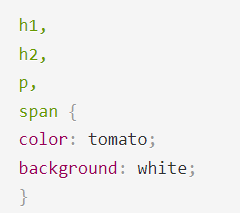

Практическая работа №2
Основы CSS
CSS (Cascading Style Sheets) — язык таблиц стилей, который позволяет прикреплять стиль (например, шрифты и цвет) к структурированным документам (например, документам HTML и приложениям XML).
Обычно CSS-стили используются для создания и изменения стиля элементов веб-страниц и пользовательских интерфейсов, написанных на языках HTML и XHTML, но также могут быть применены к любому виду XML-документа, в том числе XML, SVG и XUL.
Отделяя стиль представления документов от содержимого документов, CSS упрощает создание веб-страниц и обслуживание сайтов.
CSS поддерживает таблицы стилей для конкретных носителей, поэтому авторы могут адаптировать представление своих документов к визуальным браузерам, слуховым устройствам, принтерам, брайлевским устройствам, карманным устройствам и т.д.
Каскадные таблицы стилей описывают правила форматирования элементов с помощью свойств и допустимых значений этих свойств. Для каждого элемента можно использовать ограниченный набор свойств, остальные свойства не будут оказывать на него никакого влияния.
Объявление стиля состоит из двух частей: селектора и объявления. В HTML имена элементов нечувствительны к регистру, поэтому «h1» работает так же, как и «H1». Объявление состоит из двух частей: имя свойства (например, color) и значение свойства (grey). Селектор сообщает браузеру, какой именно элемент форматировать, а в блоке объявления (код в фигурных скобках) перечисляются форматирующие команды — свойства и их значения.

Хотя приведенный пример пытается влиять только на пару свойств, необходимых для рендеринга HTML-документа, он сам по себе квалифицируется как таблица стилей. В сочетании с другими таблицами стилей (одна фундаментальная особенность CSS заключается в том, что таблицы стилей объединяются), правило будет определять окончательное представление документа.
Виды каскадных таблиц стилей и их специфика
Содержание:
Виды таблиц и стилей
Внешняя таблица стилей
Внешняя таблица стилей представляет собой текстовый файл с расширением .css, в котором находится набор CSS-стилей элементов. Файл создаётся в редакторе кода, так же как и HTML-страница. Внутри файла могут содержатся только стили, без HTML-разметки. Внешняя таблица стилей подключается к веб-странице с помощью элемента , расположенного внутри раздела
. Такие стили работают для всех страниц сайта.К каждой веб-странице можно присоединить несколько таблиц стилей, добавляя последовательно несколько элементов , указав в атрибуте media назначение данной таблицы стилей. rel="stylesheet" указывает тип ссылки (ссылка на таблицу стилей).

Атрибут type="text/css" не является обязательным по стандарту HTML5, поэтому его можно не указывать. Если атрибут отсутствует, по умолчанию используется значение type="text/css".
Внутренние стили
Внутренние стили встраиваются в раздел <head></head> HTML-документа и определяются внутри элемента <style></stylesheet>. Внутренние стили имеют приоритет над внешними, но уступают встроенным стилям (заданным через атрибут style).

Встроенные стили
Когда мы пишем встроенные стили, мы пишем CSS-код в HTML-файл, непосредственно внутри элемента с помощью атрибута style:

Такие стили действуют только на тот элемент, для которого они заданы.
Правило @import
Правило @import позволяет загружать внешние таблицы стилей. Чтобы директива @import работала, она должна располагаться в таблице стилей (внешней или внутренней) перед всеми остальными правилами:

Виды селекторов
Селекторы представляют структуру веб-страницы. С их помощью создаются правила для форматирования элементов веб-страницы. Селекторами могут быть элементы, их классы и идентификаторы, а также псевдоклассы и псевдоэлементы.
Test
Универсальный селектор
Соответствует любому HTML-элементу. Например, * {margin: 0;} обнулит внешние отступы для всех элементов сайта. Также селектор может использоваться в комбинации с псевдоклассом или псевдоэлементом: *:after {CSS-стили}, *:checked {CSS-стили}.
Селектор элемента
Селекторы элементов позволяют форматировать все элементы данного типа на всех страницах сайта. Например, h1 {font-family: Lobster, cursive;} задаст общий стиль форматирования всех заголовков h1.
Селектор класса
Селекторы класса позволяют задавать стили для одного и более элементов с одинаковым именем класса, размещенных в разных местах страницы или на разных страницах сайта. Например, для создания заголовка с классом headline необходимо добавить атрибут class со значением headline в открывающий тег <h1> и задать стиль для указанного класса. Стили, созданные с помощью класса, можно применять к другим элементам, не обязательно данного типа.


Если элемент имеет несколько атрибутов класса, их значения объединяются с пробелами <h1 class="headline post-title">.
Селектор идентификатора
Селектор идентификатора позволяет форматировать один конкретный элемент. Значение id должно быть уникальным, на одной странице может встречаться только один раз и должно содержать хотя бы один символ. Значение не должно содержать пробелов.
Нет никаких других ограничений на то, какую форму может принимать id, в частности, идентификаторы могут состоять только из цифр, начинаться с цифры, начинаться с подчеркивания, состоять только из знаков препинания и т. д.
Уникальный идентификатор элемента может использоваться для различных целей, в частности, как способ ссылки на конкретные части документа с использованием идентификаторов фрагментов, как способ нацеливания на элемент при создании сценариев и как способ стилизации конкретного элемента из CSS.

Селектор потомка
Селекторы потомков применяют стили к элементам, расположенным внутри элемента-контейнера. Например, ul li {text-transform: uppercase;} — выберет все элементы li, являющиеся потомками всех элементов ul.
Если нужно отформатировать потомки определенного элемента, этому элементу нужно задать стилевой класс:
- p.first a {color: green;} — данный стиль применится ко всем ссылкам, потомкам абзаца с классом first;
- p .first a {color: green;} — если добавить пробел, то будут стилизованы ссылки, расположенные внутри любого элемента класса .first, который является потомком элемента <p>;
- .first a {color: green;} — данный стиль применится к любой ссылке, расположенной внутри другого элемента, обозначенного классом .first.
Комбинация селекторов
Для более точного отбора элементов для форматирования можно использовать комбинации селекторов:
- a[href][title] — выберет все ссылки, для которых заданы атрибуты href и title;
- mg[alt*="css"]:nth-of-type(even) i— выберет все четные картинки, альтернативный текст которых содержит слово css.
Группировка селекторов
Один и тот же стиль можно одновременно применить к нескольким элементам. Для этого необходимо в левой части объявления перечислить через запятую нужные селекторы:
Наследование и каскад
Наследование и каскад — два фундаментальных понятия в CSS, которые тесно связаны между собой. Наследование заключается в том, что элементы наследуют свойства от своего родителя (элемента, их содержащего). Каскад проявляется в том, как разные виды таблиц стилей применяются к документу, и как конфликтующие правила переопределяют друг друга.
Наследование
Наследование является механизмом, с помощью которого определенные свойства передаются от предка к его потомкам. Спецификацией CSS предусмотрено наследование свойств, относящихся к текстовому содержимому страницы, таких как , font, letter-spacing, line-height, list-style, text-align, text-indent, text-transform, visibility, white-space и word-spacing. Во многих случаях это удобно, так как не нужно задавать размер шрифта и семейство шрифтов для каждого элемента веб-страницы.
Свойства, относящиеся к форматированию блоков, не наследуются. Это background, border, display, float и clear, height и width, margin, min-max-height и -width, outline, overflow, padding, position, text-decoration, vertical-align и z-index
Каскад
Каскадирование — это механизм, который управляет конечным результатом в ситуации, когда к одному элементу применяются разные CSS-правила. Существует три критерия, которые определяют порядок применения свойств — правило !important, специфичность и порядок, в котором подключены таблицы стилей.